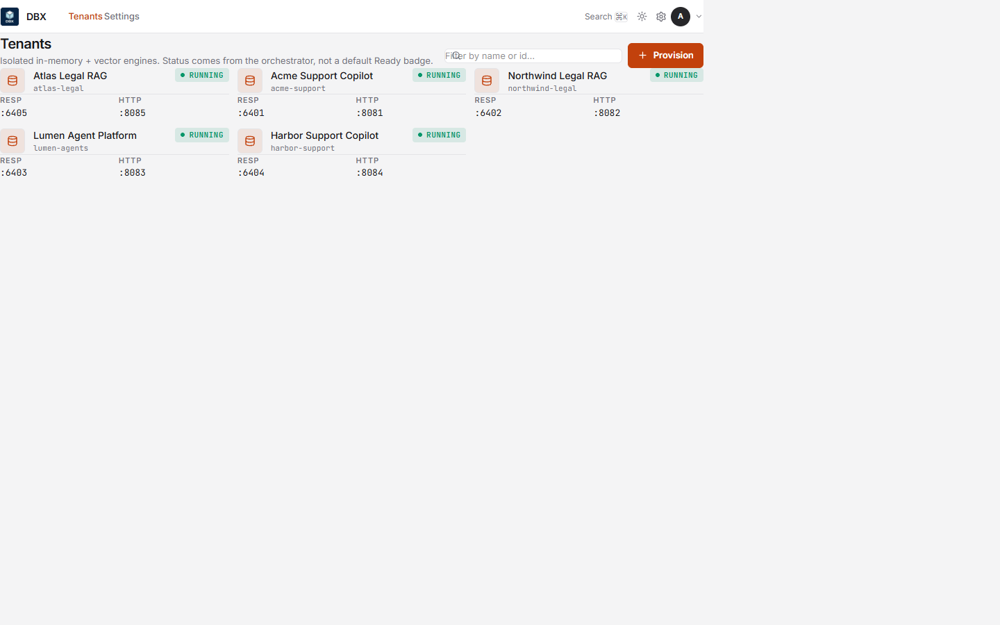
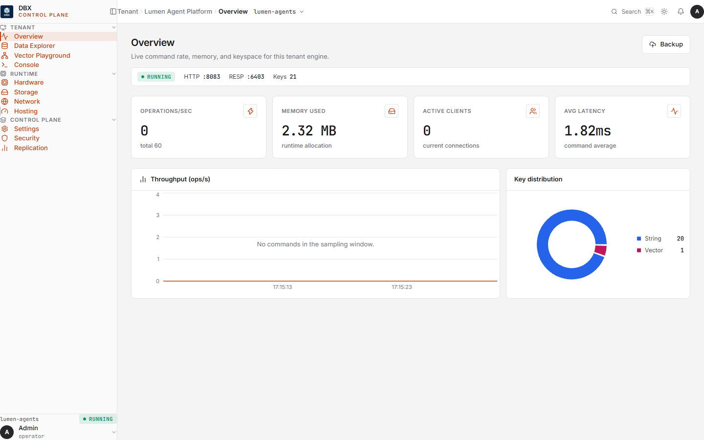
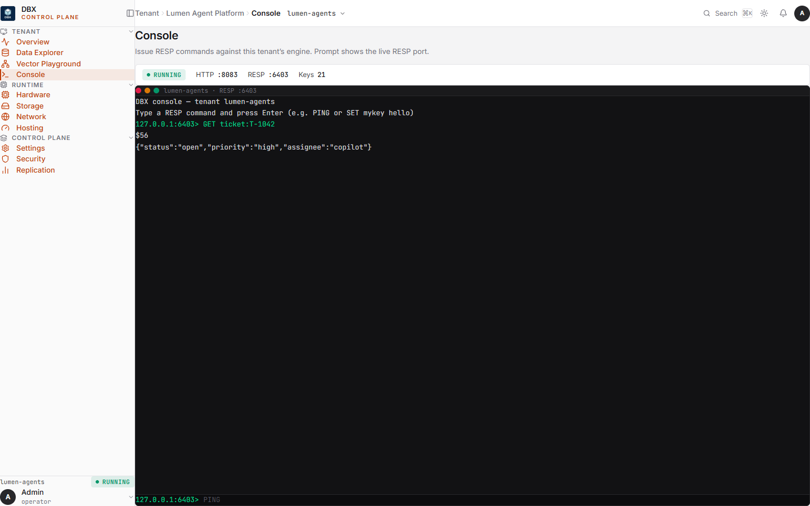

acme
session empty
vectors 0
WAL seq 0
Memory engine, not a shared cluster.
DBX holds working state and vector memory in the same process — and that process belongs to one tenant. Isolation is a directory, a WAL, and an HNSW index. Not a prefix you hope nobody forgets.
Browser sketch of the product, not a live node. GET on harbor cannot see acme’s session.
Why it exists
The stores you already run assume one pool. You bolt customers on with names. That works until it doesn’t.
One missing tenant:{id}: in one query is a cross-customer data leak.
Session in a cache, embeddings in a vector DB. Dual writes. Two pages at 3am.
You cannot restore one customer. You snapshot the whole machine.
A scan, a prefix sweep, a blast radius. Off-boarding becomes a project.
One busy tenant evicts a quiet tenant’s working set from a shared pool.
What has to stay true in the code
Five claims. RESP is how you connect, not why you buy.
POST /api/provision creates a live isolated engine — own data directory, WAL, HNSW, snapshots. Backup and delete hit exactly one customer.
KV with TTL and HNSW vectors, one process, one connection, one directory, one backup archive.
SQ8 mmap vectors. Idle tenants sit in page cache. You pay for who is awake, not who signed.
Dashboard, console, explorer, playground — compiled in. Embeddings never leave the network.
Linux production seals each tenant as its own process with a Landlock-restricted filesystem, an encrypted WAL and index, and a Unix socket only the orchestrator can open.
redis-py, ioredis, go-redis already speak RESP. Useful for trying DBX. Not a substitute for a tuned shared KV cluster.
Operator UI, in the binary
Not a mock. Screens from the embedded dashboard: tenants, overview, and the RESP console.



Fit
| If you need | Use | Why not DBX |
|---|---|---|
| Peak shared KV throughput | Redis / Dragonfly | Their design target. Ours is isolation. |
| Billion-vector ANN | Qdrant / Milvus | DBX is sized for per-tenant working sets. |
| Fully managed vectors | Pinecone | DBX is software you run. Deliberately. |
| System of record | Postgres + pgvector | DBX sits in front of the system of record and underneath the agent. |
Operator walkthrough
Real screens from the embedded UI. No stock footage. Advance with the arrows or sit with the loop.
BSL 1.1
Free to self-host, including inside your own SaaS. Cannot offer managed DBX to third parties without a commercial deal.